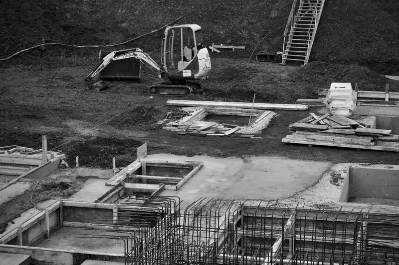
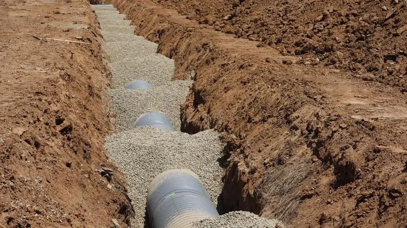
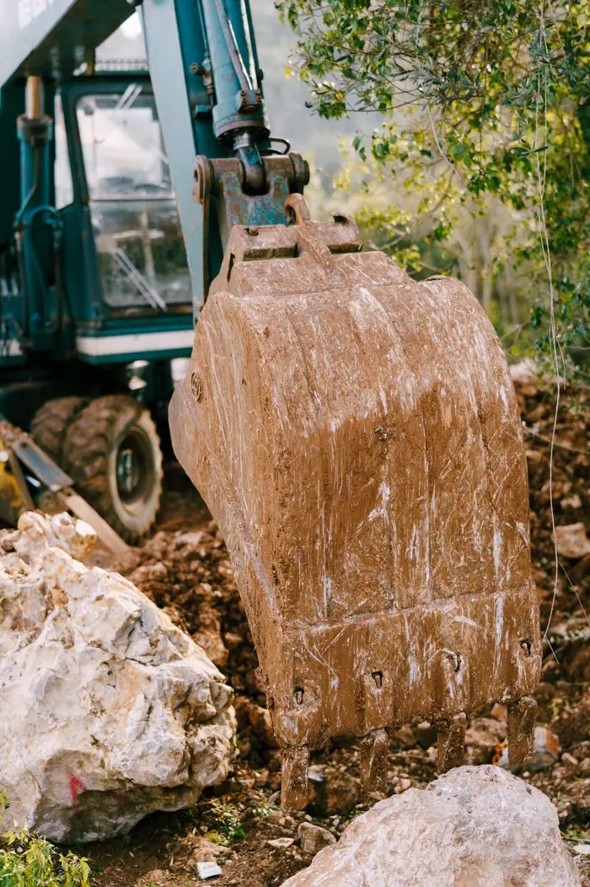

Terrassement de maison et d'extension
Décapage de la terre végétale, fouilles en rigole ou en pleine masse, plateforme compactée pour la dalle.
Cliquez sur votre situation : le formulaire se remplit tout seul.
Nos travaux
Décapage de la terre végétale, fouilles en rigole ou en pleine masse, plateforme compactée pour la dalle.
Tranchées et fourreaux pour l'eau, l'électricité, la fibre et le tout-à-l'égout, en lien avec les concessionnaires.
Fosse toutes eaux, filtre compact ou micro-station, selon l'étude de sol et les exigences du service de contrôle.
Implantation, fouille aux cotes du pisciniste, évacuation ou régalage des déblais sur votre terrain.
Petits bâtiments, dalles, murets : démolition, tri et évacuation des gravats vers les filières adaptées.
Nivellement, drainage, enrochement, préparation des allées et des accès pour les véhicules.
Comment ça se passe
Envoyez le plan de masse ou quelques photos du terrain si vous les avez.
Accès, nature du sol, pente, réseaux : on regarde tout avant de chiffrer.
Terrassement, évacuation, remblais : chaque poste chiffré, au mètre cube quand c'est possible.
Démarches réseaux faites, date tenue, terrain laissé propre et nivelé.
Chantiers récents

Pessac · Maison neuve

Saint-Médard-en-Jalles · Terrain à bâtir

Gradignan · Jardin
Nos engagements
Sébastien Lebrun, gérant et conducteur d'engins
« Le terrain était prêt le jour prévu pour le maçon. Terres évacuées, plateforme nickel, rien à redire. »
« Ils ont tout géré pour la viabilisation, y compris les échanges avec les concessionnaires. Un vrai soulagement. »
Questions fréquentes
Votre question n'est pas là ?
Appelez-nous au 05 36 49 18 62.
Le prix dépend du volume de terre, de la nature du sol, de l'accès pour les engins et de la gestion des déblais (évacuation ou réemploi). Après la visite, nous chiffrons chaque poste pour que vous compariez sur une base claire.
Le raccordement aux réseaux : eau potable, électricité, télécom et fibre, eaux usées et pluviales. Nous réalisons les tranchées et les branchements en lien avec chaque concessionnaire.
Si le contrôle du service d'assainissement l'a déclarée non conforme, oui, dans un délai fixé. Nous installons une solution adaptée à votre sol et à la taille du logement, après étude.
Oui dans la plupart des cas : nos mini-pelles passent par un accès d'environ un mètre. On vérifie l'accès lors de la visite.
Selon votre projet, elles sont régalées sur le terrain, réutilisées en remblai ou évacuées. C'est décidé avec vous et chiffré dans le devis.
Oui, des déclarations préalables sont obligatoires près des réseaux enterrés. Nous nous en occupons avant le démarrage du chantier.
Oui dans de nombreuses zones : elle est obligatoire dans les secteurs exposés au retrait-gonflement des argiles, et elle détermine les fondations adaptées. Nous vous aidons à vérifier si votre terrain est concerné.
Cela dépend des distances aux réseaux et des délais des gestionnaires pour les raccordements, souvent le point le plus long. Nous faisons le point sur chaque réseau dès la visite pour vous annoncer un calendrier réaliste.
Devis gratuit
Quelques informations suffisent. On vous rappelle pour fixer la visite de terrain, gratuite et sans engagement.
Du lundi au vendredi, 7 h à 18 h
27 avenue de l'Industrie, 33700 Mérignac
Nous intervenons à Bordeaux, Mérignac, Pessac, Talence, Le Haillan, Saint-Médard-en-Jalles, Eysines, Bègles, Gradignan, Villenave-d'Ornon.